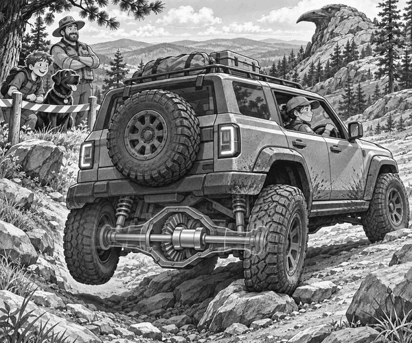

Wind had pulled down three trail signs.
Ranger Mia packed new signs into her 4x4.
Tom and Scout rode in the truck behind.
They climbed towards Crow Lookout.
The track was slow and rocky.
Soon they reached Crow Rock.
A shallow ditch crossed the track.
Recovery guide Jo walked ahead.
He checked the stones.
He made sure no walkers were near.
Tom and Scout waited behind a safe barrier.
“Low gear,” called Jo. “Walking speed.”
Mia crept into the ditch.
The front left wheel climbed.
The rear right wheel dropped.
Then the rear left wheel rose into the air.
It began to spin.
The 4x4 stopped moving.
Mia took her foot off the pedal at once.
“No wild wheel spin,” she said.
Jo checked the tyres and the rocks.
Nothing was broken.
The wheel on the ground had plenty of grip.
But it was not pushing hard enough.
“Why not?” asked Tom.
Mia drew two circles in the dust.
“There is a clever set of gears between the rear wheels,” she said.
“It is called a differential.”
4x4 fact: A differential lets the left and right wheels turn at different speeds. That helps a vehicle go around a corner.
But the wheel in the air had almost no grip.
It was taking the easy spin.
Mia had a tool for this moment.
First, she made sure both rear wheels were still.
Then she pressed the rear differential-lock button.
A small light came on.
“Locked,” said Mia.
Now both rear wheels would turn together.
The wheel in the air could not race ahead.
The wheel on the rock could push.
Jo pointed along the safe line.
Mia used the tiniest touch of power.
Grip. Creep. Crunch.
The tyre on the rock held firm.
The 4x4 crawled forwards.
The flying wheel came gently down.
All four tyres were on the track again.
Tom cheered.
Scout gave one happy woof.
Recovery fact: A differential lock makes both wheels on one axle turn at the same speed. It is for slow, loose or slippery ground. Engage it before the obstacle with the wheels still, then unlock it after the obstacle and before normal firm-road driving.
Mia stopped on a level patch of loose gravel.
She switched the lock off.
The warning light went dark.
At Crow Lookout, the team fixed every sign.
Tom looked back at the rocky track.
“The wheel in the air looked busy,” he said.
“But the wheel on the ground did the useful work.”
Mia smiled.
“A clever tool, a careful plan and a tiny bit of power.”
Above them, a crow swept over the rocks.